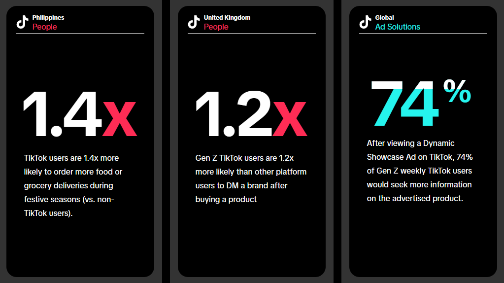

How to Create Engaging Tiktok Content
1.Understand your audience
Before diving into creating content for TikTok, it’s essential to understand the platform’s community and its unique style. TikTok has its own language, trends, and features, making it stand out from other social media platforms. To create content that resonates with TikTok users, it’s crucial to lean into these elements and make videos that feel natural and seamless to the platform. When brands create TikTok-first ads, they catch the attention of 74% of viewers and drive 3.3x more action compared to other platforms.
2.Leverage text overlays and creative cards
Text overlays and creative cards play a significant role in capturing viewers’ attention and making ads more likable. Creative attributes that encourage people to read increase view time and drive recall. When creating TikTok videos, don’t underestimate the power of text. You can even use the auto-captions feature to automatically add subtitles to your videos, making them more accessible to a wider audience.
3.Partner with other creators
One of the easiest and most effective ways to create TikTok-first content is by partnering with other creators. These creators are natural storytellers and brand advocates, and the TikTok community trusts their opinions. The TikTok Creator Marketplace is a great resource for finding the right creator for your budget or campaign. By leveraging partnerships with creators, you can amplify your brand’s reach and connect with your target audience in an authentic and engaging way.
“TikTok creators are natural storytellers and brand advocates, and the TikTok community trusts the opinions of their peers.” – TikTok for Business
4.Embrace trends
Trends play a significant role in the TikTok community, allowing brands to capitalize on popular storytelling templates created by users. Research shows that 77% of TikTok users appreciate it when brands use trends, memes, or challenges to create new content. You can connect with new customers and showcase your brand’s personality by participating in trends. Explore the Trends page on the TikTok Creative Center to discover what’s currently trending and how brands are tapping into cultural moments to garner billions of views and attract more TikTok followers.
5.Optimize content for TikTok’s unique features
When creating content for TikTok, it’s essential to optimize it for the platform’s unique features. Shoot your videos vertically, use high-resolution footage, and be mindful of the UI-friendly “safe space” to ensure your creative assets are efficient and visually appealing. Additionally, leverage editing techniques like music, transitions, movement, emojis, and branding to create interest, capture attention, and drive ad memorability.
6.Harness the power of storytelling
Storytelling is a powerful sales strategy for brands on TikTok. By grabbing users’ attention, conveying value, and driving action, a strong content structure will guide your audience through your ad and keep them engaged. A recommended three-part structure consists of a hook, body, and close.
7.Create evergreen content for your website
While TikTok is a powerful platform for reaching new customers, it’s also essential to create evergreen content for your website. Evergreen content remains relevant and fresh to your customers regardless of when it was first published. By understanding your customers’ pain points and using relevant keywords, you can create educational and valuable articles that position you as an expert in your field. Concentrate on creating content clusters surrounding specific keywords to establish your website as an authoritative resource.